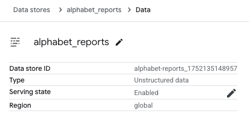
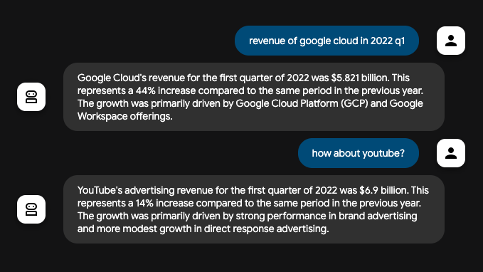
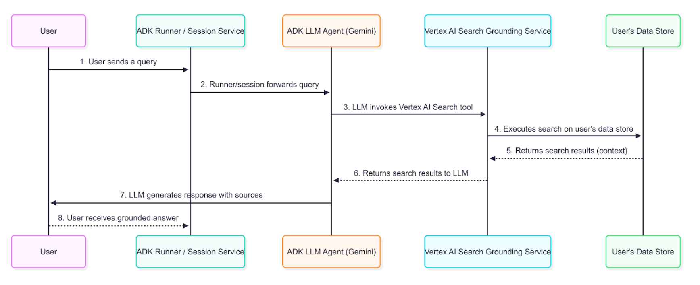

認識 Vertex AI Search 知識接地 (grounding)¶
Vertex AI Search Grounding 工具 是 Agent Development Kit (ADK) 中的一項強大功能，可讓 AI agent 存取您企業內部文件與資料庫中的資訊。透過將 agent 連接到已建立索引的企業內容，您可以為使用者提供以組織知識庫為基礎的答案。
這項功能特別適用於需要查詢內部文件、政策、研究論文或任何已在 Vertex AI Search 資料儲存區建立索引的專有內容的企業專屬問題。當您的 agent 判斷需要來自知識庫的資訊時，會自動搜尋已建立索引的文件，並將搜尋結果納入回應中，並正確標註來源。
您將學到什麼¶
在本指南中，您將了解：
- 快速開始：如何從零開始建立並執行支援 Vertex AI Search 的 agent
- 知識接地架構：企業文件知識接地的資料流程與技術細節
- 回應結構：如何解讀知識接地回應及其中繼資料
- 最佳實踐：向使用者顯示引用與文件參考的指引
Vertex AI Search 知識接地快速開始¶
本快速開始將引導您建立一個具備 Vertex AI Search 知識接地功能的 ADK agent。本快速開始假設您已在本機 IDE（如 VS Code 或 PyCharm 等）安裝 Python 3.9 以上版本，並可使用終端機。
1. 準備 Vertex AI Search¶
如果您已經有 Vertex AI Search 資料儲存區及其資料儲存區 ID，可以跳過本節。若尚未建立，請依照 Get started with custom search 的指示操作，直到 Create a data store 結束，並選擇 Unstructured data 分頁。依照這些指示，您將以 Alphabet investor site 的財報 PDF 建立一個範例資料儲存區。
完成 Create a data store 步驟後，請開啟 Data Stores，選擇您建立的資料儲存區，並找到 Data store ID：

請記下此 Data store ID，稍後會用到。
2. 設定環境並安裝 ADK¶
建立並啟用虛擬環境：
# Create
python -m venv .venv
# Activate (each new terminal)
# macOS/Linux: source .venv/bin/activate
# Windows CMD: .venv\Scripts\activate.bat
# Windows PowerShell: .venv\Scripts\Activate.ps1
安裝 Agent Development Kit (ADK)：
3. 建立 Agent 專案¶
在專案目錄下，執行以下指令：
# Step 1: Create a new directory for your agent
mkdir vertex_search_agent
# Step 2: Create __init__.py for the agent
echo "from . import agent" > vertex_search_agent/__init__.py
# Step 3: Create an agent.py (the agent definition) and .env (authentication config)
touch vertex_search_agent/agent.py .env
改進後的翻譯：
# Step 1: Create a new directory for your agent
mkdir vertex_search_agent
# Step 2: Create __init__.py for the agent
echo "from . import agent" > vertex_search_agent/__init__.py
# Step 3: Create an agent.py (the agent definition) and .env (authentication config)
type nul > vertex_search_agent\agent.py
type nul > google_search_agent\.env
編輯 agent.py¶
請將以下程式碼複製並貼到 agent.py，然後將 Configuration 部分的 YOUR_PROJECT_ID 和 YOUR_DATASTORE_ID 分別替換為你的專案 ID 及 Data Store ID：
from google.adk.agents import Agent
from google.adk.tools import VertexAiSearchTool
# Configuration
DATASTORE_ID = "projects/YOUR_PROJECT_ID/locations/global/collections/default_collection/dataStores/YOUR_DATASTORE_ID"
root_agent = Agent(
name="vertex_search_agent",
model="gemini-2.5-flash",
instruction="Answer questions using Vertex AI Search to find information from internal documents. Always cite sources when available.",
description="Enterprise document search assistant with Vertex AI Search capabilities",
tools=[VertexAiSearchTool(data_store_id=DATASTORE_ID)]
)
現在你應該會有以下的目錄結構：
4. 認證設定¶
注意：Vertex AI Search 需要 Google Cloud Platform（Vertex AI）的認證。本工具不支援 Google AI Studio。
- 設定 gcloud CLI
- 於終端機執行
gcloud auth login，以驗證 Google Cloud。 -
開啟
.env檔案，將下列程式碼複製貼上，並更新專案 ID 及 Location。
5. 執行你的 agent¶
你可以透過多種方式與你的 agent 互動：
執行以下指令以啟動 dev UI。
Note for Windows users
When hitting the _make_subprocess_transport NotImplementedError, consider using adk web --no-reload instead.
Step 1: Open the URL provided (usually http://localhost:8000 or
http://127.0.0.1:8000) directly in your browser.
Step 2. In the top-left corner of the UI, you can select your agent in the dropdown. Select "vertex_search_agent".
Troubleshooting
If you do not see "vertex_search_agent" in the dropdown menu, make sure you
are running adk web in the parent folder of your agent folder
(i.e. the parent folder of vertex_search_agent).
Step 3. Now you can chat with your agent using the textbox.
📝 範例提示詞（prompts）可供嘗試¶
透過以下問題，你可以確認 agent 確實有呼叫 Vertex AI Search 來從 Alphabet 報告中取得資訊：
- Google Cloud 在 2022 年第一季的營收是多少？
- 那 YouTube 呢？

你已成功使用 Agent Development Kit (ADK) 建立並與你的 Vertex AI Search agent 互動！
Vertex AI Search 知識接地（grounding）運作原理¶
透過 Vertex AI Search 進行知識接地（grounding），是將你的 agent 連結到組織內已建立索引的文件與資料，讓其能根據企業內部的專屬內容產生精確的回應。當使用者的提示需要來自內部知識庫的資訊時，agent 背後的大型語言模型 (LLM) 會智慧地決定是否要呼叫 VertexAiSearchTool，以從已建立索引的文件中尋找相關事實。
資料流程圖¶
下圖說明了使用者查詢如何逐步產生一個知識接地（grounded）的回應。

詳細說明¶
知識接地 agent 會依據圖中的資料流程，檢索、處理並將企業資訊整合到最終呈現給使用者的答案中。
-
使用者查詢：最終使用者透過提問有關內部文件或企業資料的問題來與你的 agent 互動。
-
ADK 協調：Agent Development Kit (ADK) 負責協調 agent 的行為，並將使用者訊息傳遞給 agent 的核心。
-
LLM 分析與工具呼叫 (tool-calling)：agent 的大型語言模型 (LLM)（例如 Gemini 模型）會分析提示詞。如果判斷需要來自已建立索引文件的資訊，則會透過呼叫 VertexAiSearchTool 啟動知識接地機制。這非常適合回答關於公司政策、技術文件或專有研究的查詢。
-
Vertex AI Search 服務互動：VertexAiSearchTool 會與你已設定的 Vertex AI Search 資料儲存庫互動，該儲存庫包含已建立索引的企業文件。服務會針對你的私有內容組成並執行搜尋查詢。
-
文件檢索與排序：Vertex AI Search 會根據語意相似度與相關性分數，從資料儲存庫中檢索並排序最相關的文件片段。
-
內容注入（Context Injection）：搜尋服務會在產生最終回應前，將檢索到的文件片段整合進模型的上下文中。這個關鍵步驟讓模型能夠根據你組織的事實資料進行「推理」。
-
產生知識接地回應：大型語言模型 (LLM) 在取得相關企業內容後，會產生一個包含文件資訊的回應。
-
帶來源的回應呈現：ADK 會接收最終的知識接地回應，該回應包含必要的來源文件參考與 groundingMetadata，並將其帶有出處地呈現給使用者。這讓最終使用者能夠根據企業來源驗證資訊。
理解 Vertex AI Search 知識接地回應¶
當 agent 使用 Vertex AI Search 進行知識接地時，會回傳包含最終文字答案與用於產生該答案的文件相關 metadata 的詳細資訊。這些 metadata 對於驗證回應內容以及提供企業來源出處非常重要。
知識接地回應範例¶
以下是模型針對企業文件進行知識接地查詢後，所回傳的 content 物件範例。
最終答案文字：
"Developing models for a medical scribe presents several significant challenges, primarily due to the complex nature of medical documentation, the sensitive data involved, and the demanding requirements of clinical workflows. Key challenges include: **Accuracy and Reliability:** Medical documentation requires extremely high levels of accuracy, as errors can lead to misdiagnoses, incorrect treatments, and legal repercussions. Ensuring that AI models can reliably capture nuanced medical language, distinguish between subjective and objective information, and accurately transcribe physician-patient interactions is a major hurdle. **Natural Language Understanding (NLU) and Speech Recognition:** Medical conversations are often rapid, involve highly specialized jargon, acronyms, and abbreviations, and can be spoken by individuals with diverse accents or speech patterns... [response continues with detailed analysis of privacy, integration, and technical challenges]"
知識接地 (grounding) 中繼資料片段：
這是你會收到的知識接地 (grounding) 中繼資料。在 adk web 上，你可以在 Response 分頁中找到這些資訊：
{
"groundingMetadata": {
"groundingChunks": [
{
"document": {
"title": "AI in Medical Scribing: Technical Challenges",
"uri": "projects/your-project/locations/global/dataStores/your-datastore-id/documents/doc-medical-scribe-ai-tech-challenges",
"id": "doc-medical-scribe-ai-tech-challenges"
}
},
{
"document": {
"title": "Regulatory and Ethical Hurdles for AI in Healthcare",
"uri": "projects/your-project/locations/global/dataStores/your-datastore-id/documents/doc-ai-healthcare-ethics",
"id": "doc-ai-healthcare-ethics"
}
}
// ... additional documents
],
"groundingSupports": [
{
"groundingChunkIndices": [0, 1],
"segment": {
"endIndex": 637,
"startIndex": 433,
"text": "Ensuring that AI models can reliably capture nuanced medical language..."
}
}
// ... additional supports linking text segments to source documents
],
"retrievalQueries": [
"challenges in natural language processing medical domain",
"AI medical scribe challenges",
"difficulties in developing AI for medical scribes"
// ... additional search queries executed
]
}
}
如何解讀回應¶
metadata（中繼資料）提供了模型生成的文字與其所依據的企業文件之間的連結。以下是逐步說明：
-
groundingChunks：這是一個模型所參考的企業文件清單。每個 chunk 包含文件標題、uri（文件路徑）以及 id。
-
groundingSupports：此清單將最終答案中的特定句子連結回
groundingChunks。 -
segment：此物件標識最終文字答案中的特定片段，該片段由其
startIndex、endIndex以及text本身所定義。 -
groundingChunkIndices：此陣列包含對應於
groundingChunks中所列來源的索引編號。例如，有關「HIPAA 合規性」的文字，是由索引 1 處的groundingChunks（"Regulatory and Ethical Hurdles" 文件）所支持。 -
retrievalQueries：此陣列顯示針對您的資料儲存區所執行的具體搜尋查詢，以尋找相關資訊。
如何以 Vertex AI Search 顯示知識接地（grounding）回應¶
與 Google Search 知識接地不同，Vertex AI Search 的知識接地不需要特定的顯示元件。然而，顯示引用與文件參考能夠建立信任，並讓使用者能夠根據您組織的權威來源驗證資訊。
選用的引用顯示¶
由於已提供知識接地的 metadata，您可以根據應用需求選擇實作引用顯示：
純文字顯示（最小實作）：
for event in events:
if event.is_final_response():
print(event.content.parts[0].text)
# Optional: Show source count
if event.grounding_metadata:
print(f"\nBased on {len(event.grounding_metadata.grounding_chunks)} documents")
增強型引文顯示（選用）： 你可以實作互動式引文，顯示每個敘述所依據的文件。知識接地（grounding）中提供的 metadata 包含所有必要資訊，可用來將文字片段對應到來源文件。
實作考量¶
在實作 Vertex AI Search 知識接地顯示時：
- 文件存取權限：確認使用者對被引用文件的存取權限
- 簡易整合：基礎文字輸出不需要額外的顯示邏輯
- 選用增強功能：僅在你的使用情境需要來源標註時才加入引文
- 文件連結：如有需要，將文件的 URI 轉換為可存取的內部連結
- 搜尋查詢：
retrievalQueries陣列顯示對你的資料庫執行過哪些搜尋
摘要¶
Vertex AI Search 知識接地（grounding）可將 AI agent 從通用型助理轉變為企業專屬的知識系統，能夠從你組織的私有文件中提供準確且帶有來源標註的資訊。將此功能整合進你的 Agent Development Kit (ADK) agent，可讓他們：
- 存取來自你已索引文件儲存庫的專有資訊
- 提供來源標註，提升透明度與信任感
- 回答內容詳盡且可驗證的企業事實
- 在 Google Cloud 環境中維護資料隱私
知識接地（grounding）流程能無縫地將使用者查詢連結到你組織的知識庫，在維持對話流程的同時，為回應內容補充來自私有文件的相關脈絡。只要正確實作，你的 agent 就能成為企業資訊探索與決策的強大工具。